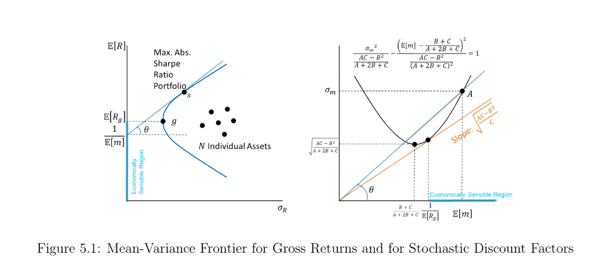
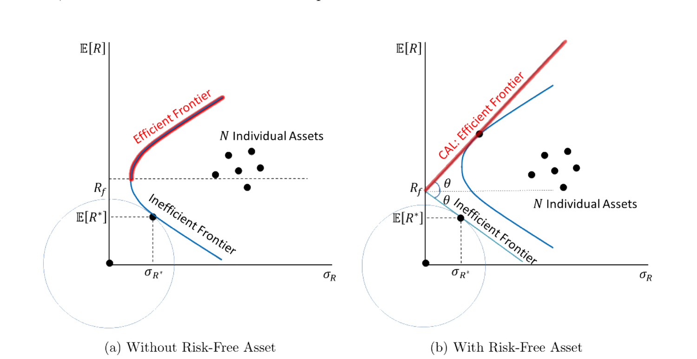

5. Stochastic Discount Factor
本章深入研究随机贴现因子 (SDF) \(m\) 本身。三条主线：(i) 校准与存在性——把 SDF 写成消费增长的函数并用 GMM 估计；在含无风险资产的支付空间里唯一的 SDF \(x^*\) 可显式求出，且是均值方差前沿切点组合的线性函数。(ii) 波动率界 (volatility bound)——任意 SDF 的方差都不小于 \(x^*\) 的方差；由此得到 Hansen–Jagannathan 界：\(\sigma_m/\mathbb E[m]\ge\) 市场可达的最大绝对夏普比率。它直接刻画了股权溢价之谜 (equity premium puzzle)。(iii) 与均值方差分析的联系 (Hansen–Richard 1987)——把任意总收益三分解为 \(R^*\)、超额收益 \(R^{e*}\) 与正交残差，证明前沿组合即 \(R^*\) 与 \(R^{e*}\) 的张成，并推出 Beta 定价表示。最后把全部结论推广到条件 (conditional) SDF 与条件 CAPM。
This chapter studies the stochastic discount factor (SDF) \(m\) itself. Three threads: (i) calibration and existence — write the SDF as a function of consumption growth and estimate it by GMM; inside a payoff space that contains a risk-free asset the unique SDF \(x^*\) has a closed form and is a linear function of the mean-variance tangency portfolio. (ii) The volatility bound — every SDF has variance no smaller than that of \(x^*\), which yields the Hansen–Jagannathan bound: \(\sigma_m/\mathbb E[m]\ge\) the maximum absolute Sharpe ratio attainable in the market. This directly captures the equity premium puzzle. (iii) The link to mean-variance analysis (Hansen–Richard 1987) — decompose any gross return three ways into \(R^*\), an excess return \(R^{e*}\), and an orthogonal residual; show the frontier is the span of \(R^*\) and \(R^{e*}\), and derive the Beta pricing representation. Finally everything is extended to the conditional SDF and the conditional CAPM.
5.1 Understand the Stochastic Discount Factor
5.1.1 Calibrate Stochastic Discount Factor
假设模型告诉我们某个特定的 SDF \(m\)。例如，由 (1.7) 的 CRRA 效用给出消费基础 SDF
Suppose a model tells us a particular SDF \(m\). For example, the consumption-based SDF from the CRRA utility in (1.7):
$$m_{t+1}=\beta\left(\frac{c_{t+1}}{c_t}\right)^{-\gamma},$$
其中两个参数 \(\beta,\gamma\) 未知。设支付空间由总收益张成 \(\mathcal X_{t+1}=\{1+r_t^{1,t+1},\,1+r_t^{2,t+1},\dots,1+r_t^{N,t+1}\}\)，则基本定价方程为
with two unknown parameters \(\beta,\gamma\). Let the payoff space be spanned by gross returns \(\mathcal X_{t+1}=\{1+r_t^{1,t+1},\,1+r_t^{2,t+1},\dots,1+r_t^{N,t+1}\}\). Then the fundamental pricing equation is
$$\mathbb E_t\!\left[m_{t+1}\big(1+r_t^{j,t+1}\big)\right]=1\quad\text{for }\forall j=1,\dots,N.$$
定义校准消费基础 SDF 的定价误差
Define the pricing error that calibrates the consumption-based SDF:
$$r_t^{j+1}(\beta,\gamma)\equiv\beta\left(\frac{c_{t+1}}{c_t}\right)^{-\gamma}\big(1+r_t^{j,t+1}\big)-1.$$
正确的 \((\beta,\gamma)\) 应使其无条件期望为零。引入第 \(t\) 期信息中的工具变量 (instrument variables) \(\mathbf y_t\)，构造无条件矩条件
The correct \((\beta,\gamma)\) should make its unconditional expectation zero. Using instrument variables \(\mathbf y_t\) in the period-\(t\) information set, construct the unconditional moment restrictions
$$\mathbb E\!\left[r_t^{j+1}(\beta,\gamma)\,\mathbf y_t\right]=0,$$
并用 GMM (Generalized Method of Moments) 估计 \(\beta,\gamma\)。GMM 的细节见后文专章。
条件 vs. 无条件。 基本方程是条件期望 \(\mathbb E_t[\cdot]=1\)，但它对 \(t\) 期信息中的任意工具 \(\mathbf y_t\) 都成立，由迭代期望律 (law of iterated expectations) 可转成可估计的无条件矩条件。
and estimate \(\beta,\gamma\) by GMM (Generalized Method of Moments). See the later chapter for GMM details.
Conditional vs. unconditional. The fundamental equation is a conditional expectation \(\mathbb E_t[\cdot]=1\), but it holds for any instrument \(\mathbf y_t\) in the period-\(t\) information set, so by the law of iterated expectations it can be turned into the estimable unconditional moment restriction.
5.1.2 Existence and Properties of the SDF in a Linear Payoff Space with a Risk-Free Payoff
命题 5.1。 设支付空间 \(\mathcal X\) 的基础包含 \(N\) 个风险支付向量 \(\mathbf x\) 和一个支付为 \(1+r_f\)、价格为 \(1\) 的无风险资产。则 \(\mathcal X\) 内存在唯一 SDF \(x^*\in\mathcal X\)，并可显式求出。
Proposition 5.1. Let the basis of the payoff space \(\mathcal X\) include \(N\) risky payoff vectors \(\mathbf x\) and one risk-free asset with payoff \(1+r_f\) and price \(1\). Then there is a unique SDF \(x^*\in\mathcal X\), given in closed form.
证明 / Proof：\(x^*=\dfrac{1}{1+r_f}+(\mathbf x-\mathbb E[\mathbf x])'\Sigma_{\mathbf x}^{-1}\big(\mathbf p-\mathbb E[\mathbf x]\tfrac{1}{1+r_f}\big)\)
\(x^*\) 为无风险资产定价给出
Pricing the risk-free asset with \(x^*\) gives
$$\mathbb E[x^*(1+r_f)]=1\ \Rightarrow\ \mathbb E[x^*]=\frac{1}{1+r_f}.\tag{5.1}$$
因 \(x^*\in\mathcal X\)，写成基础的线性组合 \(x^*=\alpha_f(1+r_f)+\mathbf x'\boldsymbol\beta\) (5.2)。对 \(\mathbf x\) 取期望并整理 (5.3)–(5.4)：
Since \(x^*\in\mathcal X\), write it as a linear combination of the basis \(x^*=\alpha_f(1+r_f)+\mathbf x'\boldsymbol\beta\) (5.2). Take expectations against \(\mathbf x\) and rearrange (5.3)–(5.4):
$$x^*=\mathbb E[x^*]+(\mathbf x-\mathbb E[\mathbf x])'\boldsymbol\beta.\tag{5.4}$$
用价格向量 \(\mathbf p=\mathbb E[x^*\mathbf x]\) 解出 \(\boldsymbol\beta\)：
Using the price vector \(\mathbf p=\mathbb E[x^*\mathbf x]\), solve for \(\boldsymbol\beta\):
$$\boldsymbol\beta=\Sigma_{\mathbf x}^{-1}\big(\mathbf p-\mathbb E[\mathbf x]\,\mathbb E[x^*]\big),\tag{5.5}$$
$$x^*=\mathbb E[x^*]+(\mathbf x-\mathbb E[\mathbf x])'\Sigma_{\mathbf x}^{-1}\big(\mathbf p-\mathbb E[\mathbf x]\,\mathbb E[x^*]\big) \ \overset{(5.1)}{\Rightarrow}\ x^*=\frac{1}{1+r_f}+(\mathbf x-\mathbb E[\mathbf x])'\Sigma_{\mathbf x}^{-1}\Big(\mathbf p-\mathbb E[\mathbf x]\,\frac{1}{1+r_f}\Big).\tag{5.6}$$
\(\Sigma_{\mathbf x}\) 可逆（基础无冗余）保证 \(x^*\) 唯一。\(\blacksquare\)
Invertibility of \(\Sigma_{\mathbf x}\) (no redundancy in the basis) makes \(x^*\) unique. \(\blacksquare\)
Remark 5.1。 无风险资产不存在时，SDF 仍由上一章 (4.3) 的 \(x^*=\mathbf x'\mathbb E[\mathbf{xx}']^{-1}\mathbf p(\mathbf x)\) 给出；这里有无风险资产的版本改用总收益 (gross return) 表述，并假设无风险收益存在。
命题 5.2。 把支付按价格归一化，考虑总收益支付空间
Remark 5.1. When no risk-free asset exists, the SDF is still given by (4.3) from the previous chapter, \(x^*=\mathbf x'\mathbb E[\mathbf{xx}']^{-1}\mathbf p(\mathbf x)\); the version with a risk-free asset here is stated in terms of gross returns and assumes a risk-free return exists.
Proposition 5.2. Normalizing payoffs by their prices, consider the gross-return payoff space
$$\mathcal X_R=\Big\{R_{t+1}:\,R_{t+1}=\sum_{i=1}^N c_i R_{i,t+1}\ \text{for }\forall c_1,\dots,c_N\in\mathbb R\Big\},$$
其中 \(R_i=x_i/p(x_i)\)。设无风险总收益为 \(R_f\)，\(\mathbf R=[R_1,\dots,R_N]'\)。则 SDF \(x^*\in\mathcal X_R\) 由命题 5.1 给出：
with \(R_i=x_i/p(x_i)\). Let the risk-free gross return be \(R_f\) and \(\mathbf R=[R_1,\dots,R_N]'\). Then the SDF \(x^*\in\mathcal X_R\) is pinned down by Proposition 5.1:
$$x^*=\frac{1}{R_f}+(\mathbf R-\mathbb E[\mathbf R])'\Sigma_{\mathbf R}^{-1}\Big(\mathbf 1-\mathbb E[\mathbf R]\,\frac{1}{R_f}\Big).\tag{5.7}$$
重写 (5.7) 可见 \(x^*\) 是均值方差切点组合 (tangency portfolio) 总收益的仿射函数：
Rewriting (5.7) shows \(x^*\) is an affine function of the gross return of the mean-variance tangency portfolio:
$$x^*=\frac{1}{R_f}-\frac{\mathbf R'\Sigma_{\mathbf R}^{-1}(\mathbb E[\mathbf R]-R_f\mathbf 1)}{R_f}+\cdots,\tag{5.8}$$
$$\boldsymbol\omega_t=\frac{\Omega^{-1}(\mathbf r-r_f\mathbf 1)}{\mathbf 1'\Omega^{-1}(\mathbf r-r_f\mathbf 1)},\tag{5.9}$$
$$\boldsymbol\omega_e=\frac{\Sigma_{\mathbf R}^{-1}(\boldsymbol\mu-R_f\mathbf 1)}{\mathbf 1'\Sigma_{\mathbf R}^{-1}(\boldsymbol\mu-R_f\mathbf 1)}.\tag{5.10}$$
于是 \(x^*=\alpha+\beta R_{ee}\)，其中 \(R_{ee}\) 是均值方差前沿切点组合的总收益。
so that \(x^*=\alpha+\beta R_{ee}\), where \(R_{ee}\) is the gross return of the mean-variance frontier tangency portfolio.
5.1.3 Volatility Bound: Minimum-Variance Stochastic Discount Factor
由 (5.4) 算 \(x^*\) 的方差：
From (5.4), compute the variance of \(x^*\):
$$\mathrm{Var}(x^*)=\boldsymbol\beta'\Sigma_{\mathbf x}\boldsymbol\beta=\big(\mathbf p-\mathbb E[\mathbf x]\mathbb E[x^*]\big)'\Sigma_{\mathbf x}^{-1}\big(\mathbf p-\mathbb E[\mathbf x]\mathbb E[x^*]\big).\tag{5.11}$$
最小方差性质。 任意可定价 SDF \(m\) 都可写成 \(m=x^*+\varepsilon\)，其中 \(\mathbb E[\varepsilon x]=0\ \forall x\in\mathcal X\) 且 \(\mathbb E[\varepsilon]=0\)（因常数 \(1\in\mathcal X\)）：
Minimum-variance property. Any admissible SDF \(m\) can be written \(m=x^*+\varepsilon\), with \(\mathbb E[\varepsilon x]=0\ \forall x\in\mathcal X\) and \(\mathbb E[\varepsilon]=0\) (since the constant \(1\in\mathcal X\)):
$$m=x^*+\varepsilon,\tag{5.12}$$
$$\mathrm{Var}(m)=\mathrm{Var}(x^*)+\mathrm{Var}(\varepsilon)+\underbrace{2\,\mathrm{Cov}(x^*,\varepsilon)}_{=0}\ \Rightarrow\ \mathrm{Var}(m)\ge\mathrm{Var}(x^*).\tag{5.13}$$
故 \(x^*\) 是最小方差 SDF（也即最小二阶矩组合）。
\(\varepsilon\) 与 \(\mathcal X\) 正交、只会增加 \(m\) 的方差；但 \(\varepsilon\) 不被 \(\mathcal X\) 内支付识别，故 \(\mathcal X\) 外的 SDF \(m\) 不唯一。
定理 5.1（Hansen–Jagannathan 1991）。 SDF 的标准差与其均值之比，不小于任意组合可达的绝对夏普比率 (absolute Sharpe ratio)。
So \(x^*\) is the minimum-variance SDF (equivalently the minimum second-moment portfolio).
\(\varepsilon\) is orthogonal to \(\mathcal X\) and only adds variance to \(m\); but \(\varepsilon\) is not identified by payoffs in \(\mathcal X\), so the SDF \(m\) outside \(\mathcal X\) is not unique.
Theorem 5.1 (Hansen–Jagannathan 1991). The ratio of the standard deviation of the SDF to its mean is no smaller than the absolute Sharpe ratio attainable by any portfolio.
证明 / Proof：Hansen–Jagannathan 界
对任意总收益 \(R\)，由 \(1=\mathbb E[mR]\) 展开协方差：
For any gross return \(R\), expand the covariance in \(1=\mathbb E[mR]\):
$$1=\mathbb E[mR]\tag{5.14}$$
$$\Rightarrow\ 1=\mathrm{Cov}(m,R)+\mathbb E[m]\mathbb E[R]=\rho_{m,R}\,\sigma_m\sigma_R+\mathbb E[m]\mathbb E[R].\tag{5.15}$$
代入无风险收益 \(R_f=1/\mathbb E[m]\) 消去截距，并用 \(|\rho_{m,R}|\le1\)：
Substitute the risk-free return \(R_f=1/\mathbb E[m]\) to remove the intercept, and use \(|\rho_{m,R}|\le1\):
$$\frac{\sigma_m}{\mathbb E[m]}\,\big|\rho_{m,R}\big|=\frac{\big|\mathbb E[R]-R_f\big|}{\sigma_R} \ \Rightarrow\ \frac{\sigma_m}{\mathbb E[m]}\ge\frac{\big|\mathbb E[R]-R_f\big|}{\sigma_R}.\tag{5.16–5.17}$$
推广到 \(N\) 个风险资产并对组合取上确界，得到 SDF 的均值方差前沿（与 §2.1.2 的常数 \(A,B,C\) 一致）：
Extending to \(N\) risky assets and taking the supremum over portfolios gives the mean-variance frontier for SDFs (with \(A,B,C\) as in §2.1.2):
$$\frac{\sigma_m^2}{\frac{AC-B^2}{A+2B+C}}-\frac{\Big(\mathbb E[m]-\frac{B+C}{A+2B+C}\Big)^2}{\frac{AC-B^2}{(A+2B+C)^2}}=1.\quad\blacksquare\tag{5.18}$$

图 5.1：总收益的均值方差前沿（左）与 SDF 的均值方差前沿（右）。左图中过 \(1/\mathbb E[m]\) 的切线斜率即最大绝对夏普比率组合；右图把同一界画在 \((\mathbb E[m],\sigma_m)\) 平面上——给定任一 \(\mathbb E[m]\) 都对应一个隐含无风险利率 \(R_f=1/\mathbb E[m]\)，可行 SDF 必落在双曲线之上。
Figure 5.1: Mean-variance frontier for gross returns (left) and for SDFs (right). On the left, the tangent line through \(1/\mathbb E[m]\) has slope equal to the maximum absolute Sharpe ratio; on the right the same bound is drawn in the \((\mathbb E[m],\sigma_m)\) plane — any given \(\mathbb E[m]\) implies a risk-free rate \(R_f=1/\mathbb E[m]\), and feasible SDFs must lie above the hyperbola.
Example 5.1（股权溢价之谜）。 由 CAPM，最大夏普比率在市场组合取得。实证数据给出 \(\dfrac{|\mathbb E[R^m]-R_f|}{\sigma_m}\approx\dfrac{6\%}{18\%}\approx0.3\)。于是消费基础 SDF 必须满足 \(\dfrac{\sigma_m}{\mathbb E[m]}\ge0.3\)。取 CRRA 效用、\(\beta=1\)、对数消费增长 \(\ln\frac{c_{t+1}}{c_t}\sim\mathcal N(\mu_c,\sigma_c^2)\)，由 §1.1.6 的参数得
Example 5.1 (equity premium puzzle). By CAPM the maximum Sharpe ratio is attained at the market portfolio. Empirically \(\dfrac{|\mathbb E[R^m]-R_f|}{\sigma_m}\approx\dfrac{6\%}{18\%}\approx0.3\), so the consumption-based SDF must satisfy \(\dfrac{\sigma_m}{\mathbb E[m]}\ge0.3\). With CRRA utility, \(\beta=1\) and log-consumption growth \(\ln\frac{c_{t+1}}{c_t}\sim\mathcal N(\mu_c,\sigma_c^2)\), the §1.1.6 parameters give
$$\frac{\sigma_m}{\mathbb E[m]}=\sqrt{e^{\gamma^2\sigma_c^2}-1}\approx\gamma\sigma_c\ \ge\ 0.3.\tag{5.19–5.20}$$
由于消费增长波动 \(\sigma_c\) 极小，要满足该界，风险厌恶 \(\gamma\) 必须高得离谱——这正是股权溢价之谜。
Since consumption-growth volatility \(\sigma_c\) is tiny, meeting the bound forces an implausibly large risk aversion \(\gamma\) — this is the equity premium puzzle.
5.1.5 Equivalence of the Two Volatility Bounds
(5.13) 与 (5.17) 看似两条不同的界，实则等价。先由 (5.11)、(5.13) 写出
(5.13) and (5.17) look like two different bounds but are equivalent. First, from (5.11) and (5.13),
$$\mathrm{Var}(m)=\big(\mathbf p-\mathbb E[\mathbf x]\mathbb E[x^*]\big)'\Sigma_{\mathbf x}^{-1}\big(\mathbf p-\mathbb E[\mathbf x]\mathbb E[x^*]\big).\tag{5.21}$$
为便于比较，将每个基础支付按价格归一化为总收益 \(\mathbf R\)（\(p(R_j)=1\)）(5.22)，并用 \(\mathbb E[x^*]=1/R_f\) 代入 (5.21)：
For comparison, normalize each basis payoff by its price into gross returns \(\mathbf R\) (so \(p(R_j)=1\)) (5.22), and substitute \(\mathbb E[x^*]=1/R_f\) into (5.21):
$$\mathrm{Var}(m)\ge\Big(\mathbf 1-\frac{\mathbb E[\mathbf R]}{R_f}\Big)'\Sigma_{\mathbf R}^{-1}\Big(\mathbf 1-\frac{\mathbb E[\mathbf R]}{R_f}\Big).\tag{5.23}$$
再把最大夏普比率 \(\sqrt{(\mathbb E[\mathbf R]-R_f\mathbf 1)'\Sigma_{\mathbf R}^{-1}(\mathbb E[\mathbf R]-R_f\mathbf 1)}\) 代入 (5.17)，整理得
Then plug the maximum Sharpe ratio \(\sqrt{(\mathbb E[\mathbf R]-R_f\mathbf 1)'\Sigma_{\mathbf R}^{-1}(\mathbb E[\mathbf R]-R_f\mathbf 1)}\) into (5.17) and simplify:
$$\frac{\mathrm{Var}(m)}{\mathbb E[m]^2}\ge(\mathbb E[\mathbf R]-R_f\mathbf 1)'\Sigma_{\mathbf R}^{-1}(\mathbb E[\mathbf R]-R_f\mathbf 1) =\Big(\mathbf 1-\frac{\mathbb E[\mathbf R]}{R_f}\Big)'\Sigma_{\mathbf R}^{-1}\Big(\mathbf 1-\frac{\mathbb E[\mathbf R]}{R_f}\Big).\tag{5.24}$$
(5.23) 与 (5.24) 完全相同——经由 SDF 投影结构得到的界，与经由收益夏普比率得到的界互相等价，估计时给出同一计算。
(5.23) and (5.24) are identical — the bound from the SDF projection structure and the bound from the return Sharpe ratio are equivalent, and yield the same calculation in estimation.
5.1.6 Models Generating an SDF with Higher Volatility
每一期都有唯一的（条件）SDF \(x^*_{t+1}\in\mathcal X_t\)。一般 SDF 写成边际效用比
Each period has a unique (conditional) SDF \(x^*_{t+1}\in\mathcal X_t\). A general SDF is the marginal-utility ratio
$$m_t^*=\frac{\beta\,u'(c_{t+1})}{u'(c_t)}\ \overset{\text{CRRA}}{=}\ \beta\left(\frac{c_{t+1}}{c_t}\right)^{-\gamma}.\tag{5.25}$$
为提高 SDF 的波动率以匹配 H–J 界，有时给 (5.25) 乘一个额外随机项 \(g_{t+1}=1+\varepsilon_{t+1}\)（\(\varepsilon_{t+1}\) 与 \(\mathcal X_t\) 正交、均值为零）：
To raise the SDF's volatility toward the H–J bound, one sometimes multiplies (5.25) by an extra random term \(g_{t+1}=1+\varepsilon_{t+1}\) (with \(\varepsilon_{t+1}\) orthogonal to \(\mathcal X_t\) and mean zero):
$$m_t^*=\beta\left(\frac{c_{t+1}}{c_t}\right)^{-\gamma}g_{t+1}.$$
\(g_{t+1}\) 虽可估计，但缺乏明确的经济基础，是这类偏好冲击 (preference shock) 设定的主要缺点。
\(g_{t+1}\) can be estimated, but lacks a clear economic foundation — the main drawback of such preference-shock specifications.
5.1.7 Comparing Models of the SDF: Hansen and Jagannathan (1997)
若有多个候选 SDF（多种效用形式），如何挑出最优？Hansen and Jagannathan (1997) 提出用候选 SDF \(y\) 到最近的真实 SDF \(m\) 的距离作为判据：
With several candidate SDFs (different utility forms), how do we pick the best? Hansen and Jagannathan (1997) propose the distance from a candidate SDF \(y\) to the closest true SDF \(m\) as the criterion:
$$\delta_g\equiv\min_m\ \mathbb E\big[(y-m)^2\big]\tag{5.26}$$
约束条件 (subject to)：
subject to:
$$p(x)=\mathbb E[mx]\ \ \forall x\in\mathcal X.\tag{5.27}$$
证明 / Proof：Hansen–Jagannathan 距离 \(\delta_g=\sqrt{\boldsymbol\alpha_{\mathbf x}'\mathbb E[\mathbf{xx}']^{-1}\boldsymbol\alpha_{\mathbf x}}\)
对 \(N\) 个约束 \(\mathbb E[m\mathbf x]=\mathbf p\) (5.28) 引入乘子 \(\boldsymbol\lambda\)，构造 Lagrangian \(\mathcal L=\mathbb E[(y-m)^2]+\boldsymbol\lambda'(\mathbb E[m\mathbf x]-\mathbf p)\)。对 \(m\) 逐状态求一阶条件：
For the \(N\) constraints \(\mathbb E[m\mathbf x]=\mathbf p\) (5.28) introduce multipliers \(\boldsymbol\lambda\) and form \(\mathcal L=\mathbb E[(y-m)^2]+\boldsymbol\lambda'(\mathbb E[m\mathbf x]-\mathbf p)\). The state-by-state FOC w.r.t. \(m\):
$$-2(y-m)+\boldsymbol\lambda'\mathbf x=0\ \Rightarrow\ m=y-\tfrac12\boldsymbol\lambda'\mathbf x.\tag{5.29}$$
代回 (5.28) 解出 \(\boldsymbol\lambda\)：
Substitute back into (5.28) to solve for \(\boldsymbol\lambda\):
$$\boldsymbol\lambda=2\,\mathbb E[\mathbf{xx}']^{-1}\big(\mathbb E[y\mathbf x]-\mathbf p\big).\tag{5.30}$$
再代回 (5.26)，记定价误差向量 \(\boldsymbol\alpha_{\mathbf x}=\mathbb E[y\mathbf x]-\mathbf p\)：
Substitute into (5.26); with pricing-error vector \(\boldsymbol\alpha_{\mathbf x}=\mathbb E[y\mathbf x]-\mathbf p\):
$$\delta_g=\sqrt{\boldsymbol\alpha_{\mathbf x}'\,\mathbb E[\mathbf{xx}']^{-1}\,\boldsymbol\alpha_{\mathbf x}}.\quad\blacksquare\tag{5.31}$$
\(\boldsymbol\alpha_{\mathbf x}\) 是用 \(y\) 当 SDF 时的定价误差 (pricing errors)；\(\delta_g\) 越大，该候选模型越差。
\(\boldsymbol\alpha_{\mathbf x}\) are the pricing errors from using \(y\) as the SDF; the larger \(\delta_g\), the worse the candidate model.
5.2 Relating the SDF to Mean-Variance Analysis: Hansen and Richard (1987)
5.2.1 Gross Return of the Unique SDF within the Payoff Space
定理 4.2 给出支付空间内唯一 SDF \(x^*\in\mathcal X\)。其总收益定义为
Theorem 4.2 gives the unique SDF \(x^*\in\mathcal X\) inside the payoff space. Its gross return is
$$R^*=\frac{x^*}{p(x^*)}=\frac{x^*}{\mathbb E[x^*x^*]}\ \Rightarrow\ R^*=\frac{x^*}{\mathbb E\big[(x^*)^2\big]}.\tag{5.32}$$
因 \(x^*\in\mathcal X\)，\(R^*\) 是某资产的总收益，落在前沿上（后证它正是最小二阶矩前沿组合）。
Since \(x^*\in\mathcal X\), \(R^*\) is the gross return of an asset on the frontier (shown below to be the minimum second-moment frontier portfolio).

图 5.2：均值方差前沿。(a) 无无风险资产；(b) 有无风险资产，前沿退化为过 \(R_f\) 的资本市场线 (CAL)。\(N\) 个个别资产散布在前沿内部，\(R^*\) 对应最小二阶矩组合。
Figure 5.2: Mean-variance frontier. (a) without a risk-free asset; (b) with a risk-free asset, the frontier becomes the capital allocation line (CAL) through \(R_f\). The \(N\) individual assets scatter inside the frontier; \(R^*\) corresponds to the minimum second-moment portfolio.
5.2.2 The Space of Excess Returns
定义超额收益空间 (excess return space) 为价格为零的支付集合：
Define the excess return space as the set of zero-price payoffs:
$$\mathcal Z=\{x\in\mathcal X:\ p(x)=0\},\tag{5.33}$$
$$R^{e*}=\mathrm{Proj}(1\mid\mathcal Z),\tag{5.34}$$
$$\mathbb E\big[(1-R^{e*})z\big]=0\ \ \forall z\in\mathcal Z.\tag{5.35}$$
即把常数 \(1\) 投影到 \(\mathcal Z\) 得 \(R^{e*}\)。
Remark 5.3。 \(R^{e*}\) 可解读为"超额收益生成元"，(5.36) 由它生成每个零价支付 \(z\in\mathcal Z\) 的（期望）超额支付。
i.e. projecting the constant \(1\) onto \(\mathcal Z\) gives \(R^{e*}\).
Remark 5.3. \(R^{e*}\) can be read as the "excess-return generator"; (5.36) is the (expected) excess payoff of each zero-price payoff \(z\in\mathcal Z\) generated by it.
5.2.3 Three-Way Decomposition of All Gross Returns
将原支付空间 \(\mathcal X\) 视为等价的总收益支付空间 \(\mathcal X_R\) (5.37)，即可对其中所有总收益做均值方差分析。
定理 5.2（三分解）。 对 \(\forall R^i\in\mathcal X_R\)，
Treat the original payoff space \(\mathcal X\) as the equivalent gross-return payoff space \(\mathcal X_R\) (5.37); we can then do mean-variance analysis on all its gross returns.
Theorem 5.2 (three-way decomposition). For \(\forall R^i\in\mathcal X_R\),
$$R^i=R^*+\omega^i R^{e*}+\eta^i,$$
其中 \(R^*\) 由 (5.32) 给定，\(\omega^i\) 是收益 \(i\) 特有的常数，\(\eta^i\in\mathcal X\) 与 \(R^*\)、\(R^{e*}\) 正交。
where \(R^*\) is given by (5.32), \(\omega^i\) is a constant specific to return \(i\), and \(\eta^i\in\mathcal X\) is orthogonal to both \(R^*\) and \(R^{e*}\).
证明 / Proof：\(\eta^i\) 满足 \(p(\eta^i)=0\)、\(\mathbb E[\eta^i R^{e*}]=0\)
取 \(\eta^i=R^i-R^*-\dfrac{\mathbb E[R^i]-\mathbb E[R^*]}{\mathbb E[R^{e*}]}R^{e*}\)，则 \(\eta^i\in\mathcal X_R\)。验证其价格为零：
Take \(\eta^i=R^i-R^*-\dfrac{\mathbb E[R^i]-\mathbb E[R^*]}{\mathbb E[R^{e*}]}R^{e*}\), so \(\eta^i\in\mathcal X_R\). Its price is zero:
$$p(\eta^i)=\mathbb E[x^*\eta^i]=\mathbb E[x^*R^i]-\mathbb E[x^*R^*]-\frac{\mathbb E[R^i]-\mathbb E[R^*]}{\mathbb E[R^{e*}]}\mathbb E[x^*R^{e*}]=1-1-0=0,$$
且 \(\mathbb E[\eta^i R^{e*}]=0\)（逐项代入定义验证）。故 \(\eta^i\in\mathcal Z\) 且与 \(R^*,R^{e*}\) 正交，三分解成立。\(\blacksquare\)
and \(\mathbb E[\eta^i R^{e*}]=0\) (verified by substituting the definitions term by term). Hence \(\eta^i\in\mathcal Z\) and is orthogonal to \(R^*,R^{e*}\), so the decomposition holds. \(\blacksquare\)
5.2.4 The Minimum Second-Moment Portfolio Is on the Frontier
定理 5.3。 \(R^*\) 是最小二阶矩前沿组合。 引理 5.1。 最小二阶矩组合在均值方差前沿上。
任意前沿组合都有 \(\eta^i=0\)：若 \(\eta^{mv}\neq0\)，则 \(\hat R^{mv}=R^*+\omega^{mv}R^{e*}\in\mathcal X_R\) 与 \(R^{mv}\) 同均值但方差更小，矛盾于 \(R^{mv}\) 在前沿上。故
Theorem 5.3. \(R^*\) is the minimum second-moment frontier portfolio. Lemma 5.1. The minimum second-moment portfolio lies on the mean-variance frontier.
Any frontier portfolio has \(\eta^i=0\): if \(\eta^{mv}\neq0\), then \(\hat R^{mv}=R^*+\omega^{mv}R^{e*}\in\mathcal X_R\) has the same mean as \(R^{mv}\) but strictly smaller variance, contradicting that \(R^{mv}\) is on the frontier. Hence
$$R^{mv}=R^*+\omega^{mv}R^{e*}.$$
Remark 5.4。 \(R^*\) 的最小二阶矩可由 \(\mathbb E[(R^*)^2]=p(R^*)=\mathbb E[(x^*)^2]/\mathbb E[(x^*)^2]^2\) 计算，几何上是 \(\mathbb E[R]\)–\(\sigma_R\) 平面上以原点为心、过前沿的圆与前沿的切点 (5.40)。
定理 5.4。 均值方差前沿上任意组合 \(R^{mv}\) 都是 \(R^*\) 与 \(R^{e*}\) 的线性组合 \(R^{mv}=R^*+\omega^{mv}R^{e*}\)。
Remark 5.4. The minimum second moment of \(R^*\) follows from \(\mathbb E[(R^*)^2]=p(R^*)\); geometrically it is the tangency of the frontier with a circle centered at the origin in the \(\mathbb E[R]\)–\(\sigma_R\) plane (5.40).
Theorem 5.4. Any portfolio \(R^{mv}\) on the mean-variance frontier is a linear combination of \(R^*\) and \(R^{e*}\): \(R^{mv}=R^*+\omega^{mv}R^{e*}\).
5.2.5 Beta Pricing Representation
命题 5.3。 对 \(\forall R^i\in\mathcal X_R\)，\(\mathbb E[R^i]\) 可写成关于 \(R^*\) 的 Beta 定价表示。
Proposition 5.3. For \(\forall R^i\in\mathcal X_R\), \(\mathbb E[R^i]\) admits a Beta pricing representation with respect to \(R^*\).
证明 / Proof：\(\mathbb E[R^i]=\gamma_{R^*}+\beta^i_{R^*}\big(\mathbb E[R^*]-\gamma_{R^*}\big)\)
由三分解算协方差 \(\mathrm{Cov}(R^*,R^i)\)，利用 \(\mathbb E[x^*R^{e*}]=0\)、\(\mathbb E[x^*\eta^i]=0\)：
Compute \(\mathrm{Cov}(R^*,R^i)\) via the decomposition, using \(\mathbb E[x^*R^{e*}]=0\) and \(\mathbb E[x^*\eta^i]=0\):
$$\mathrm{Cov}(R^*,R^i)=\frac{1}{\mathbb E[(x^*)^2]}-\mathbb E[R^*]\mathbb E[R^i].\tag{5.38}$$
整理出截距 \(\gamma_{R^*}=1/\mathbb E[x^*]\) 与 Beta \(\beta^i_{R^*}=\mathrm{Cov}(R^*,R^i)/\mathrm{Var}(R^*)\)：
Rearranging gives intercept \(\gamma_{R^*}=1/\mathbb E[x^*]\) and beta \(\beta^i_{R^*}=\mathrm{Cov}(R^*,R^i)/\mathrm{Var}(R^*)\):
$$\mathbb E[R^i]=\gamma_{R^*}+\beta^i_{R^*}\big(\mathbb E[R^*]-\gamma_{R^*}\big).\quad\blacksquare\tag{5.39}$$
命题 5.4。 对 \(\forall R^{mv}\in\mathcal X_R\)，\(R^{mv}=R^*+\omega^{mv}R^{e*}\) 当且仅当收益可写成关于 \(R^{mv}\) 的 Beta 定价表示。
Remark 5.5。 即 \(\mathbb E[R^i]=\gamma_{R^{mv}}+\beta^i_{R^{mv}}\big(\mathbb E[R^{mv}]-\gamma_{R^{mv}}\big)\)，其中 \(\gamma_{R^{mv}}=\mathbb E[R^{mv}]-\dfrac{\mathrm{Var}(R^{mv})\,\mathbb E[R^{e*}]}{\mathrm{Cov}(R^{mv},R^{e*})}\) (5.40)。
Proposition 5.4. For \(\forall R^{mv}\in\mathcal X_R\), \(R^{mv}=R^*+\omega^{mv}R^{e*}\) if and only if returns admit a Beta pricing representation with respect to \(R^{mv}\).
Remark 5.5. That is \(\mathbb E[R^i]=\gamma_{R^{mv}}+\beta^i_{R^{mv}}\big(\mathbb E[R^{mv}]-\gamma_{R^{mv}}\big)\), with \(\gamma_{R^{mv}}=\mathbb E[R^{mv}]-\dfrac{\mathrm{Var}(R^{mv})\,\mathbb E[R^{e*}]}{\mathrm{Cov}(R^{mv},R^{e*})}\) (5.40).
证明 / Proof：两个方向（前沿组合 \(\Leftrightarrow\) Beta 定价）
(\(\Rightarrow\)) 设 \(R^{mv}=R^*+\omega^{mv}R^{e*}\)。极小化 \(R^{e*}\) 方向得超额收益组合权重 \(\omega^e\) (5.41)，可证 \(\mathrm{Cov}(R^e,R^{e*})=0\) (5.42)，并算出
(\(\Rightarrow\)) Let \(R^{mv}=R^*+\omega^{mv}R^{e*}\). Minimizing in the \(R^{e*}\) direction gives the excess-return weight \(\omega^e\) (5.41); one shows \(\mathrm{Cov}(R^e,R^{e*})=0\) (5.42) and computes
$$\gamma_{R^{mv}}=\mathbb E[R^*]-\frac{\mathbb E[R^*]\,\mathbb E[R^{e*}]}{\cdots}=\frac{1}{\mathbb E[x^*]}-\cdots,\tag{5.43}$$
$$\mathbb E[R^i]=\gamma_{R^{mv}}+\beta^i_{R^{mv}}\big(\mathbb E[R^{mv}]-\gamma_{R^{mv}}\big).\tag{5.44}$$
(\(\Leftarrow\)) 反方向用反证：若 \(R^{mv}\) 给出 Beta 定价但 \(\eta^{mv}\neq0\)，可构造同均值更小方差的前沿组合，矛盾。故 \(\eta^{mv}=0\)。\(\blacksquare\)
(\(\Leftarrow\)) The converse is by contradiction: if \(R^{mv}\) yields Beta pricing but \(\eta^{mv}\neq0\), one builds a same-mean smaller-variance frontier portfolio, a contradiction. Hence \(\eta^{mv}=0\). \(\blacksquare\)
5.3 Conditional Stochastic Discount Factor
5.3.1 Information Structure
引入信息流（filtration）\(\mathcal F_0\subset\mathcal F_1\subset\cdots\subset\mathcal F_t\)。在不完全市场中，用资产信息估计条件期望会带来误差，但只要该误差与 \(\mathcal F_t\) 信息正交即可：\(\mathbb E[(z_{t+1}-y_t)z_t]=0\)。\(y_t\) 是 \(\mathcal F_t\)-可测的随机变量。
Introduce a filtration \(\mathcal F_0\subset\mathcal F_1\subset\cdots\subset\mathcal F_t\). In an incomplete market, estimating a conditional expectation from asset information carries error, but it suffices that the error be orthogonal to the \(\mathcal F_t\) information: \(\mathbb E[(z_{t+1}-y_t)z_t]=0\), where \(y_t\) is an \(\mathcal F_t\)-measurable random variable.
5.3.2 Conditional Pricing
把无条件定价逐期条件化。\(\mathcal F_t\) 下证券 \(y_{t+1}\) 的（条件）价格为
Conditionalize pricing period by period. The (conditional) price of security \(y_{t+1}\) given \(\mathcal F_t\) is
$$p_t(y_{t+1})=\mathbb E\big[x^*_{t+1}y_{t+1}\mid\mathcal F_t\big],\tag{5.45}$$
由迭代期望律，\(\mathbb E[p_t(y_{t+1})]=\mathbb E[x^*_{t+1}y_{t+1}]\)，即条件定价在期望意义下与无条件定价一致。条件 SDF 的总收益
By the law of iterated expectations, \(\mathbb E[p_t(y_{t+1})]=\mathbb E[x^*_{t+1}y_{t+1}]\) — conditional pricing agrees with unconditional pricing in expectation. The gross return of the conditional SDF is
$$R^*_{t+1}=\frac{x^*_{t+1}}{p_t(x^*_{t+1})}=\frac{x^*_{t+1}}{\mathbb E\big[(x^*_{t+1})^2\mid\mathcal F_t\big]}.\tag{5.46}$$
类似地定义条件超额收益空间 \(\mathcal Z_t=\{z_{t+1}\in\mathcal X_t:\ p_t(z_{t+1})=0\}\)，并由投影得 \(R^{e*}_{t+1}\)：\(\mathbb E[(1-R^{e*}_{t+1})z_{t+1}\mid\mathcal F_t]=0\) (5.47)。对应定理 5.4，条件均值方差前沿上任意组合都是 \(R^*_{t+1}\) 与 \(R^{e*}_{t+1}\) 的线性组合：
Similarly define the conditional excess-return space \(\mathcal Z_t=\{z_{t+1}\in\mathcal X_t:\ p_t(z_{t+1})=0\}\) and obtain \(R^{e*}_{t+1}\) by projection: \(\mathbb E[(1-R^{e*}_{t+1})z_{t+1}\mid\mathcal F_t]=0\) (5.47). Analogous to Theorem 5.4, any portfolio on the conditional mean-variance frontier is a linear combination of \(R^*_{t+1}\) and \(R^{e*}_{t+1}\):
$$R^{mv}_{t+1}=R^*_{t+1}+\omega^{mv}_t R^{e*}_{t+1},\tag{5.48}$$
其中 \(\omega^{mv}_t\) 是随时间变化 (time-varying) 的常数。
条件前沿（用 \(\mathbb E[R^{mv}_{t+1}\mid\mathcal F_t]\) 张成）一般不等于无条件前沿。只有当条件权重 \(\omega^{mv}_t\) 恒为常数时两者才重合——这正是条件 CAPM 不能简单推出无条件 CAPM 的根源。
where \(\omega^{mv}_t\) is a time-varying constant.
The conditional frontier (spanned using \(\mathbb E[R^{mv}_{t+1}\mid\mathcal F_t]\)) generally does not equal the unconditional frontier. They coincide only when the conditional weight \(\omega^{mv}_t\) is constant — exactly why the conditional CAPM does not simply imply the unconditional CAPM.
5.3.3 Conditional CAPM
无条件 CAPM 由 (2.25) 写成
The unconditional CAPM is, from (2.25),
$$\mathbb E[R^i]-R^f=\underbrace{\frac{\mathrm{Cov}(R^i,R^m)}{\mathrm{Var}(R^m)}}_{\beta^i}\big(\mathbb E[R^m]-R^f\big).\tag{5.49}$$
把它逐期条件化，得条件 CAPM（w.r.t. 条件均值方差前沿）：
Conditionalizing it period by period gives the conditional CAPM (w.r.t. the conditional mean-variance frontier):
$$\mathbb E\big[R^i_{t+1}\mid\mathcal F_t\big]-R^f_t=\beta^i_t\Big(\mathbb E\big[R^m_{t+1}\mid\mathcal F_t\big]-R^f_t\Big),\qquad \beta^i_t=\frac{\mathrm{Cov}\big(R^i_{t+1},R^m_{t+1}\mid\mathcal F_t\big)}{\mathrm{Var}\big(R^m_{t+1}\mid\mathcal F_t\big)}.\tag{5.50}$$
对 (5.50) 两边取无条件期望，会多出 \(\beta^i_t\) 与条件溢价的协方差项：
Taking unconditional expectations of both sides of (5.50) leaves an extra covariance term between \(\beta^i_t\) and the conditional premium:
$$\mathbb E\big[R^i_{t+1}\big]-\mathbb E\big[R^f_t\big]=\mathbb E\big[\beta^i_t\big]\,\mathbb E\big[\pi_t\big] +\underbrace{\mathrm{Cov}\big(\beta^i_t,\,\pi_t\big)}_{\neq\,0},\qquad \pi_t\equiv\mathbb E\big[R^m_{t+1}\mid\mathcal F_t\big]-R^f_t.$$
- 当 \(\beta^i_t\) 与条件市场溢价 \(\pi_t\) 的协方差非零时，条件 CAPM 成立并不蕴含无条件 CAPM 成立——这解释了为什么条件模型能拟合数据而无条件模型却被实证拒绝。
- 若要让无条件 CAPM 也成立，需要 \(\beta^i_t\) 与 \(\pi_t\) 不相关（如二者皆为常数）。
- 时变参数（时变 \(\beta\)、时变溢价）由此进入资产定价，引出第 6.3 节的条件因子模型与时变载荷讨论。
直觉。 投资者真正面对的是逐期的条件前沿；把多期条件前沿"叠加"出来的无条件可行集，会因 \(\omega^{mv}_t\) 随状态变化而偏离任何单一的无条件前沿。条件与无条件之间的鸿沟，本质上是 \(\beta\) 与溢价随时间共动造成的。
- When the covariance of \(\beta^i_t\) with the conditional market premium \(\pi_t\) is non-zero, the conditional CAPM holding does not imply the unconditional CAPM — explaining why conditional models can fit data while unconditional ones are empirically rejected.
- For the unconditional CAPM to also hold, \(\beta^i_t\) must be uncorrelated with \(\pi_t\) (e.g. both constant).
- Time-varying parameters (time-varying \(\beta\), time-varying premium) thus enter asset pricing, motivating the conditional factor models and time-varying loadings of Section 6.3.
Intuition. Investors really face the period-by-period conditional frontier; the unconditional feasible set "stacked" from many conditional frontiers departs from any single unconditional frontier because \(\omega^{mv}_t\) varies with the state. The gap between conditional and unconditional is essentially driven by the co-movement of \(\beta\) and the premium over time.
References
- Cochrane, J. H. (2005). Asset Pricing (Revised Edition). Princeton University Press.
- Hansen, L. P. and R. Jagannathan (1991). Implications of Security Market Data for Models of Dynamic Economies. Journal of Political Economy 99(2), 225–262.
- Hansen, L. P. and R. Jagannathan (1997). Assessing Specification Errors in Stochastic Discount Factor Models. The Journal of Finance 52(2), 557–590.
- Hansen, L. P. and S. F. Richard (1987). The Role of Conditioning Information in Deducing Testable Restrictions Implied by Dynamic Asset Pricing Models. Econometrica 55(3), 587–613.
- Mehra, R. and E. C. Prescott (1985). The Equity Premium: A Puzzle. Journal of Monetary Economics 15(2), 145–161.